案例精选
围绕四大服务方向，呈现真实的设计落地效果。图片与视频均来自实际项目拍摄。
项目档案 · NEW
建发央玺 · 四房精装房软装落地实录
保留精装交付格局、不敲墙，靠墙面、窗帘、灯光把气质改过来；柜体与封窗同期下单，60 天交付。预算结构逐项拆开。

01 · 全案设计与落地
毛坯到入住的完整交付
从空间规划、硬装施工图、主材清单到软装方案的一体化服务。

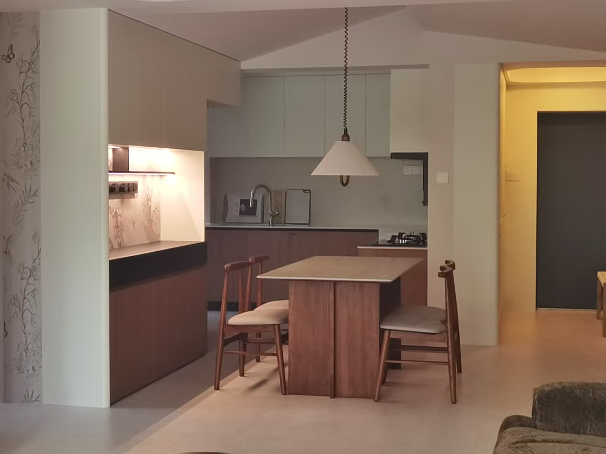
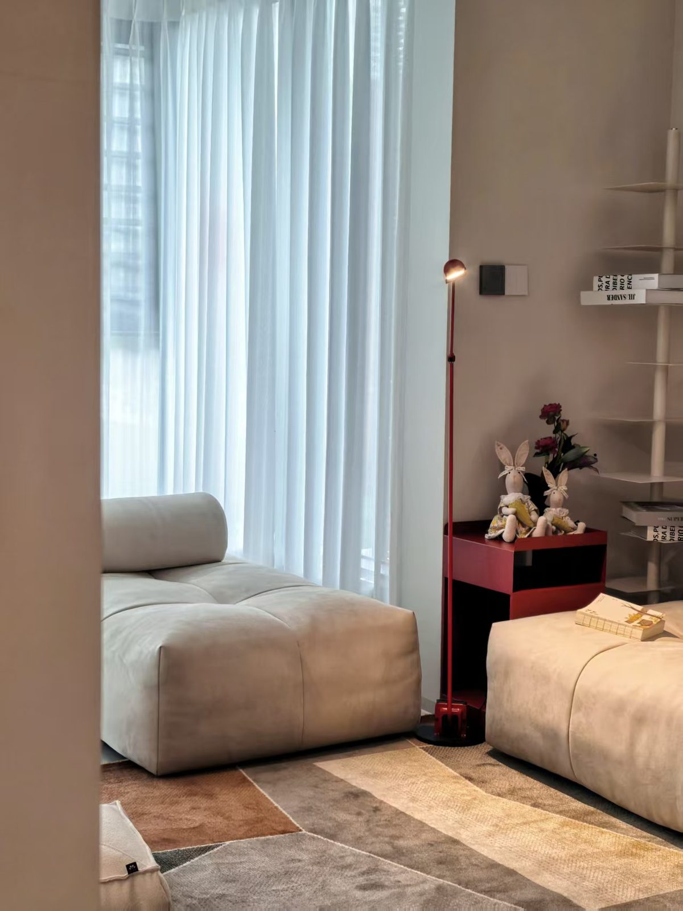
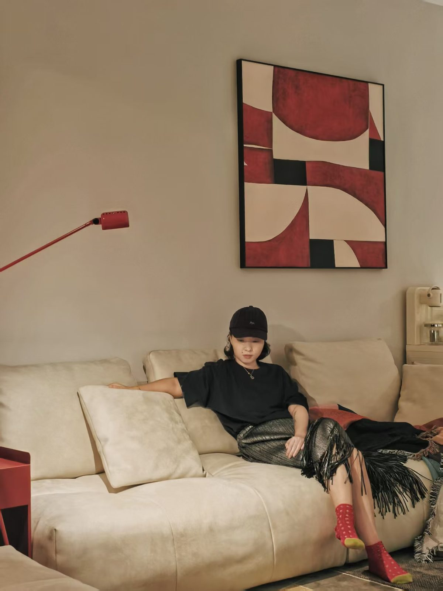
全案设计与落地
让概念被准确执行
全案设计不是「画图」，而是从空间规划、硬装施工图纸、主材清单到软装方案的一体化服务。我们将效果图变为可落地的施工图纸，全程跟进交底。
硬装施工图主材清单软装方案全程跟进
02 · 软装设计
让空间自己说话
用色彩、材质和比例构建有情感的空间。

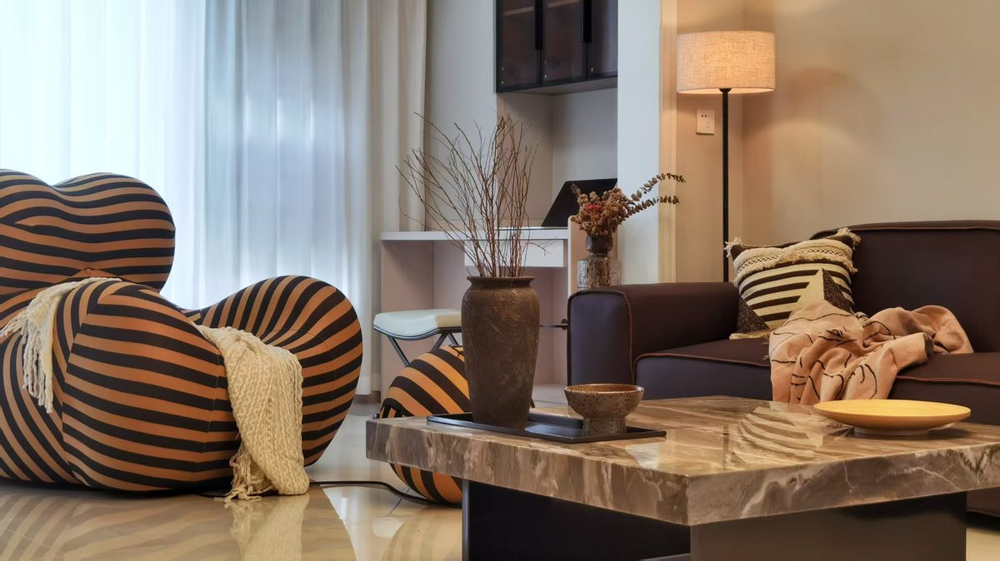
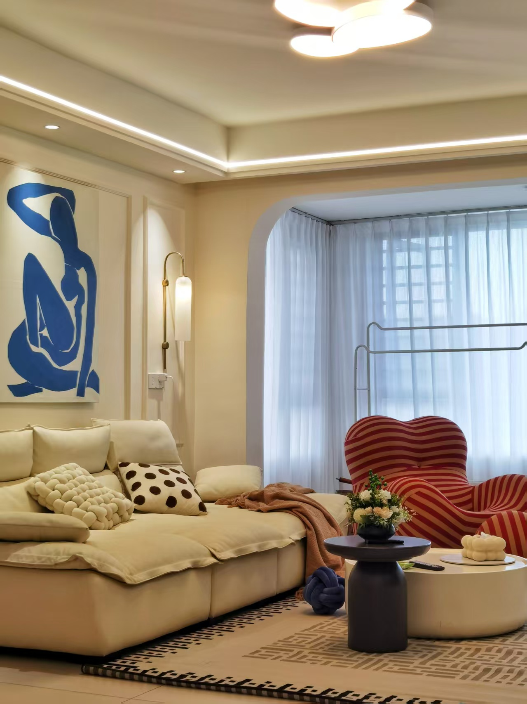
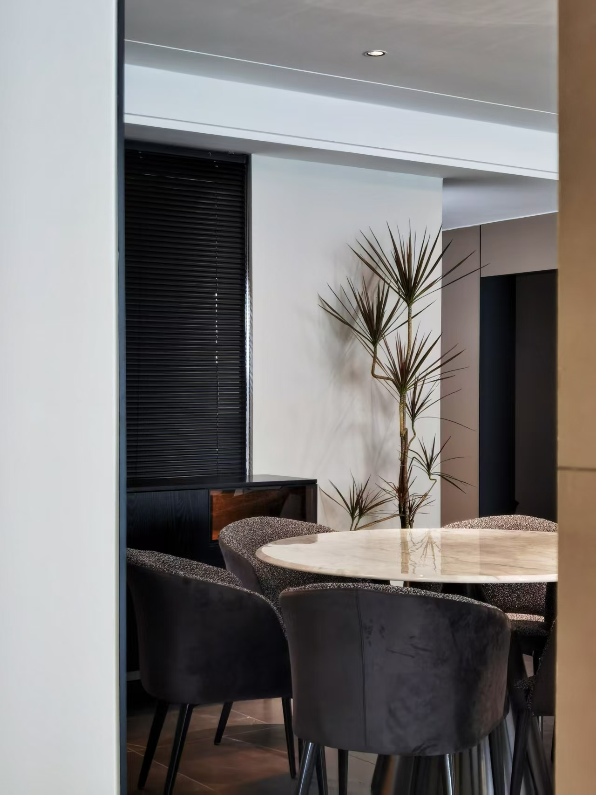
软装设计
从沙发面料到窗帘褶皱
软装不是堆砌家具，而是用色彩、材质和比例构建一个有情感的空间。效果图 + 采购清单 + 摆场指导，完整交付。
效果图采购清单摆场指导色彩搭配
03 · 精装房改造
不敲一面墙，换一个家
不碰结构、不改水电，通过墙面、灯光、软饰三个维度焕新。
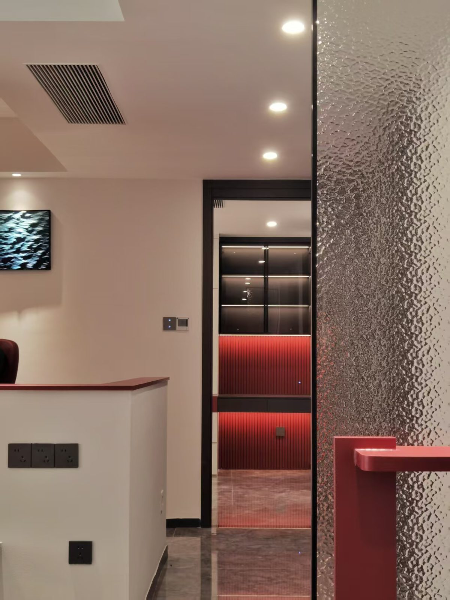
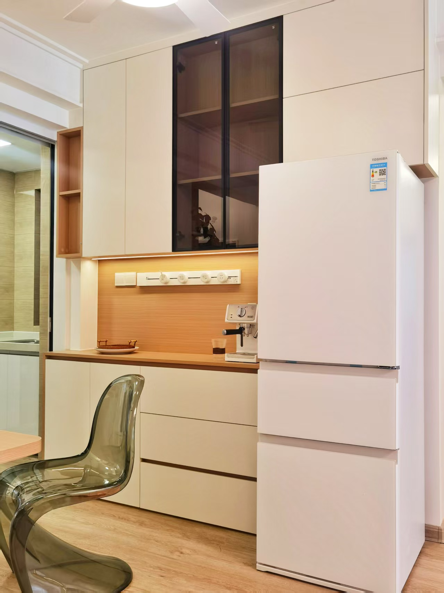
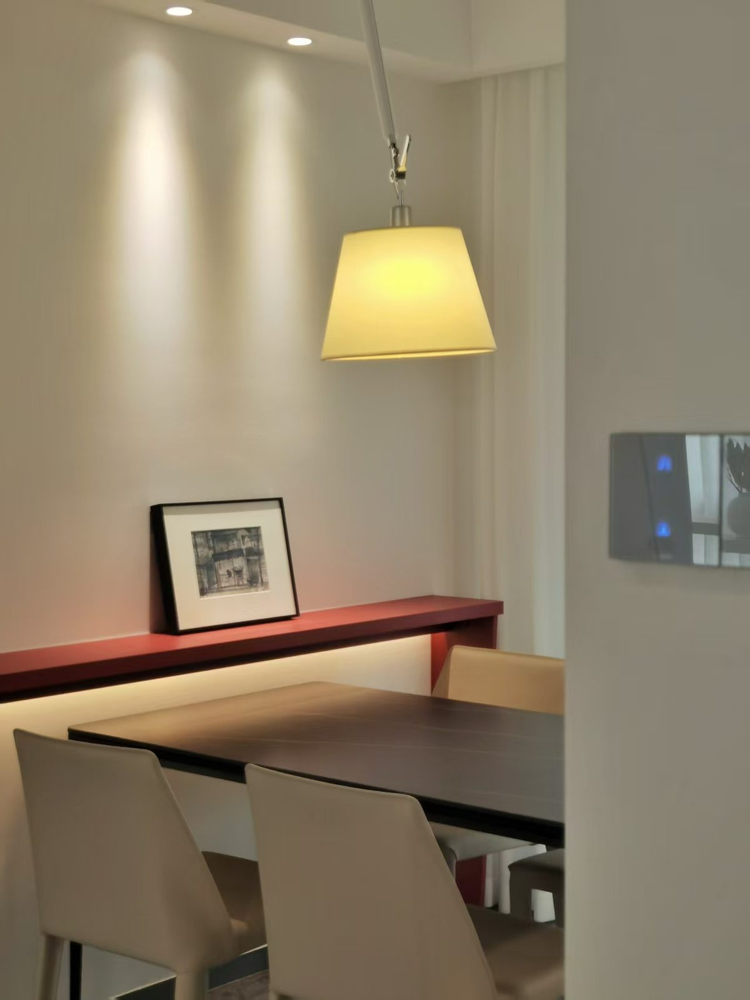
精装房改造
快则两周，慢则一月
精装房千篇一律？我们不碰结构、不改水电，通过墙面色彩、灯光方案和软装饰品让气质焕然一新。
墙面色彩灯光改造软饰焕新零结构改动
04 · 软装单品采买
精准单品，四两拨千斤
窗帘换一款面料，角落加一盏落地灯，空间瞬间有灵魂。
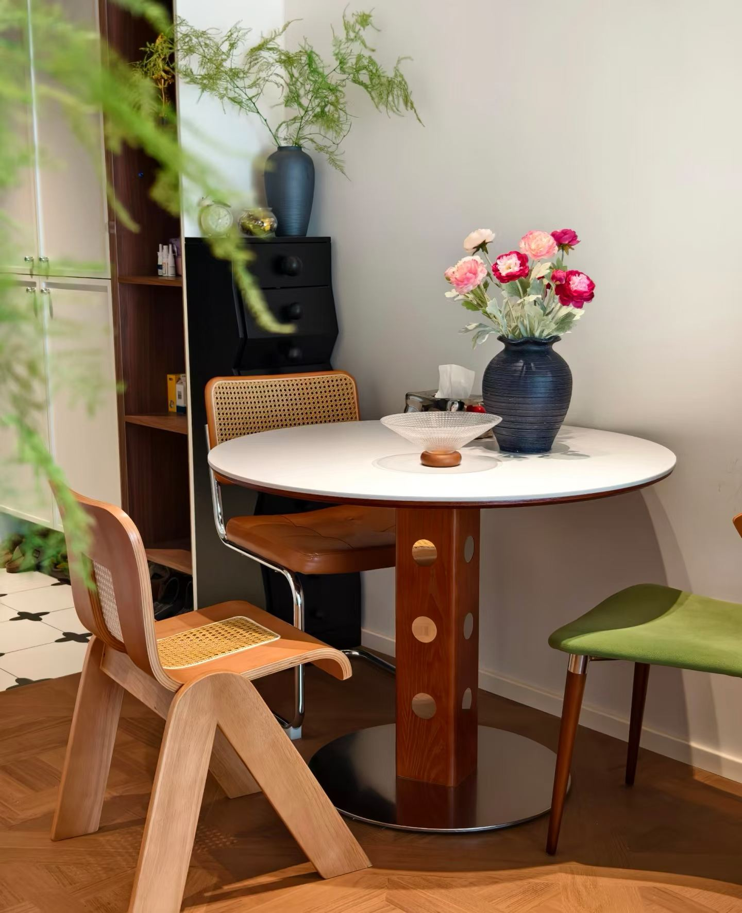
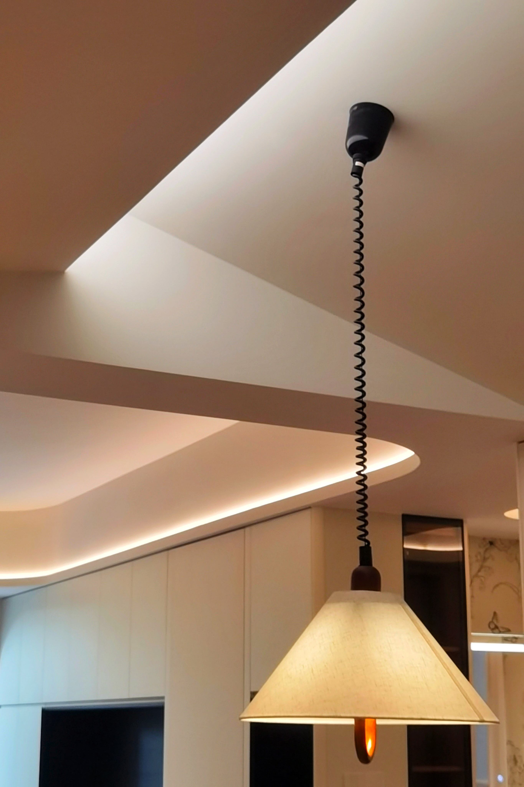
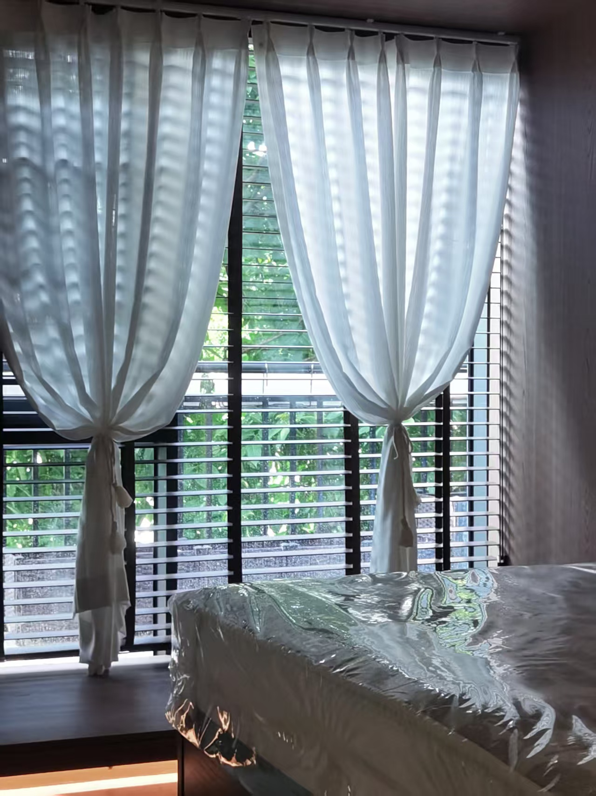
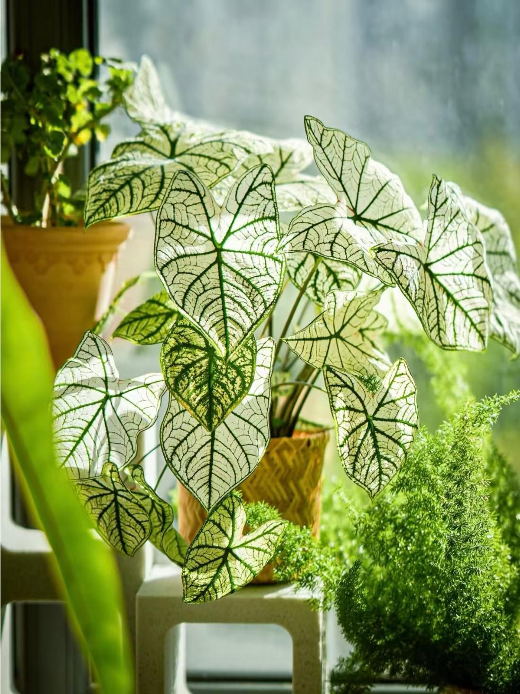
软装单品采买
用最小改动换最大氛围
我们提供选品方案和采购清单，让你的空间瞬间有灵魂。也可只提供清单，让你自行购买。
窗帘地毯灯具挂画家具绿植
已落地楼盘
南宁这些小区的家，我们装过
以下为公开笔记中提及的南宁真实楼盘 / 小区实景案例，点开看对应灵感笔记。